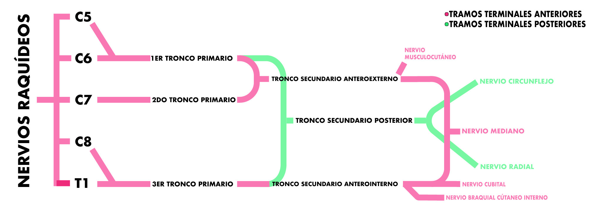
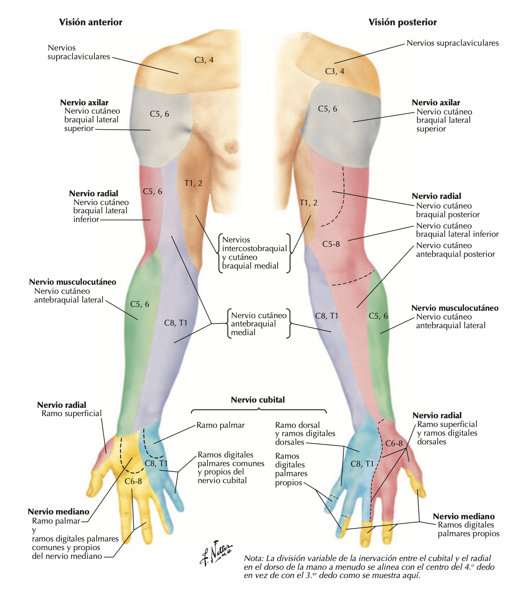

Plexo Braquial
Raíces, troncos, fascículos y ramas terminales.
Un plexo es una red nerviosa formada por la anastomosis (sinonimo de juntar - solo en irrigación) de las ramas anteriores de los nervios raquídeos. Cuatro tipos, cervical, braquial, lumbar y sacro.
Los nervios raquídeos están formados por una raíz ventral roja y una dorsal azul. La dorsal lleva información sensitiva y la ventral lleva información motora. El nervio sale por el agujero de conjunción y se divide en una rama anterior y posterior. La rama posterior se encarga de la inervación de los músculos de la espalda, la rama anterior forma flexos.
Plexo Braquial
Formado por la unión de las ramas anteriores de los nervios espinales que salen desde el 5to agujero de conjunción cervical hasta el 1er torácico. (C5, C6, C7, C8, T1) no hablamos de vértebras, llevan el mismo nombre pero hacemos referencia a la rama anterior del nervio raquídeo. (La primera rama sale por encima del Atlas).
Referencia visualImagen 01
{kind=link}

En el curso de su trayecto atraviesa:
- Porción IE del cuello: Se encuentra entre los músculos escalenos anterior y medio.
- Región Axilar: Se relaciona con la arteria axilar.
Ramas Terminales Anteriores
Nervio Musculocutáneo
Nace del fascículo externo del Tronco Secundario AnteroExterno y se dirige:
- Brazo:
- Perfora el músculo coracobraquial delimitando el canal de casserius para situarse entre el músculo bíceps braquial y el músculo braquial anterior.
- Codo:
- Se hace superficial a nivel del canal bicipital externo.
Nervio Mediano
Nace de la anastomosis del fascículo interno del TSAE y el fascículo externo del TSAI.
- Brazo:
- Desciende sobre la cara interna del brazo, formando el paquete VAN del brazo junto con la arteria y vena humeral. Siempre por encima de la arteria
- Codo:
- Pasa por el canal bicipital interno.
- Antebrazo:
- Desciende verticalmente a lo largo de la cara anterior del antebrazo. En los dos tercios superiores pasa entre los músculos flexores comunes profundos y superficial de los dedos; y en el tercio inferior se encuentra entre los músculos palmares mayor y menor.
- Muñeca:
- Atraviesa el tunel carpiano.
- Mano
- Se divide en sus ramas terminales (rama tenoriana)
Nervio Cubital
Nasce del fascículo interno del Tronco Secundario AnteroInterno
- Brazo:
- Desciende por la cara interna del brazo
- Codo:
- Se hace posterior y pasa por el canal epitrocleoolecraniano
- Antebrazo:
- Se hace anterior y discurre aplicado al músculo cubital anterior formando el paquete VAN cubital.
- Muñeca:
- Atraviesa el Canal de Guyon
- Mano:
- Da dos ramas terminales.
Nervio Braquial Cutáneo Interno
Nace del fascículo interno del Tronco Secundario AnteroInterno
- Brazo:
- Desciende por la cara interna del brazo y se hace superficial en la mitad anterior para dividirse en dos ramas terminales.
Ramas Terminales Posteriores
Nervio Circunflejo
Nace de la rama externa del Tronco Secundario Posterior
- Brazo:
- A la altura de la epífisis superior del húmero se va hacia posterior, pasando por el cuadrilátero de Velpeau, acompañado por los vasos circunflejos posteriores.
Nervio Radial
Nace de la rama interna del Tronco Secundario Posterior
- Brazo:
- A la altura de la epífisis superior del húmero se va hacia posterior pasando por el triángulo de Avelino Gutierrez junto con la arterial humeral profunda, para correr por el canal de torsión del húmero
- Codo:
- Pasa por el canal bicipital externo
- Antebrazo:
- Se divide en una rama anterior y posterior, la posterior perfora al músculo supinador corto, generando el Canal de Frohse.
Ramas Colaterales Anteriores:
- Nervio Pectoral Externo: Inerva al músculo pectoral mayor.
- Nervio Pectoral Interno: Inerva al músculo pectoral menor.
- Nervio Subclavio: Inerva al músculo subclavio.
Ramas Colaterales Posteriores:
- Nervio Supraescapular: Inerva a los músculos supra e infra espinoso.
- Nervio Subescapular: Inerva el músculo subescapular.
- Nervio Toracodorsal: Inerva el músculo dorsal ancho.
- Nervio del Músculo Redondo Mayor: Inerva al músculo redondo mayor.
- Nervio Torácico Largo (de Charles Bell): Inerva al músculo serrato anterior.
- Nervio Dorsal de la Escápula: Inerva a los músculos escaleno medio, elevador de la escápula y romboides mayor.
Referencia visualImagen 02
{kind=link}
